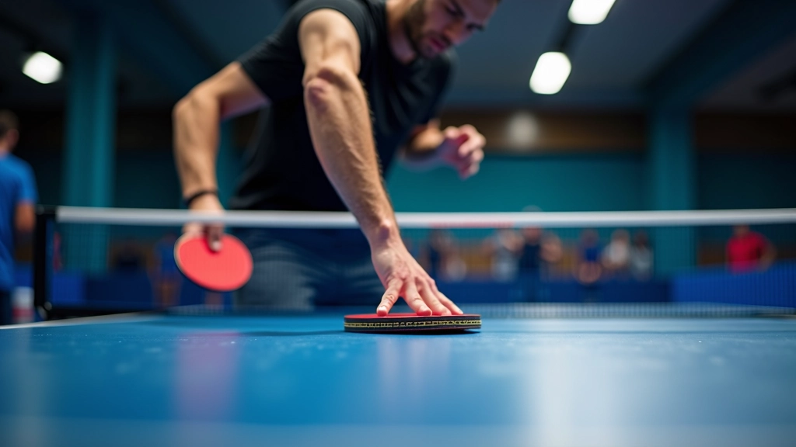
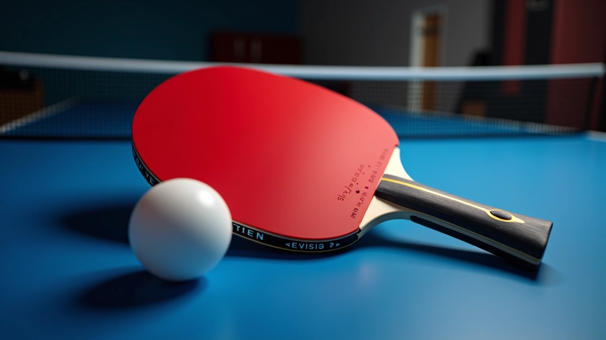
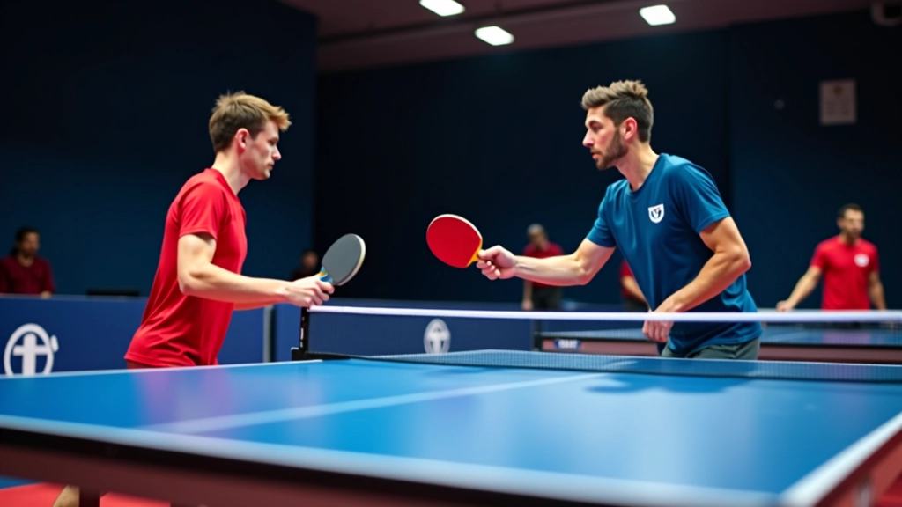
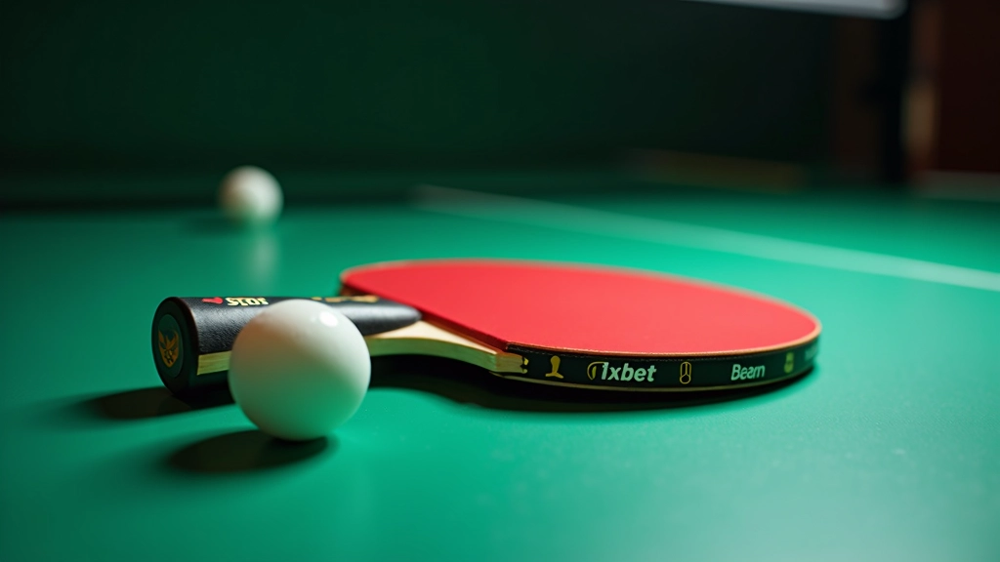

الحركات الأساسية لاستقبال الإرسالات
تعرف على الموقف الصحيح والحركات التي تحتاجها لبدء اللعب. هذه الأساسيات توفر أساس قوي لكل شيء آخر.
معظم اللاعبين يقعون في نفس الفخاخ. نناقش الأخطاء التي تراها بشكل متكرر وكيفية إصلاحها بسرعة.

هناك نمط واضح في أخطاء استقبال الإرسال. اللاعبون الجدد يرتكبون نفس الأخطاء تقريباً — والمشكلة أنهم غالباً لا يعرفون أنهم يفعلون ذلك. عندما تفهم ما يحدث خطأ، يمكنك إصلاحه.
هذا الدليل يركز على الأخطاء التي نراها كل يوم في الملعب. من الموقف الخاطئ إلى توقيت التحريك السيء — نشرح كل شيء ونقدم حلولاً عملية تعمل بالفعل.

أكثر الأخطاء شيوعاً التي نراها هو الموقف الذي لا يسمح بالحركة السريعة. الكثير من اللاعبين يقفون بشكل مستقيم جداً أو يضعون وزنهم على الكعب.
الموقف الصحيح يتطلب: قدماك بعرض الأكتاف، الركبتان منحنيتان قليلاً، الوزن على كرات القدمين. هذا يعطيك القدرة على التحرك للأمام أو الخلف بسرعة. عندما يكون وزنك متوازناً، يمكنك الاستجابة في أقل من 0.3 ثانية.
الحل السريع: اختبر موقفك: هل يمكنك القفز للأعلى بسهولة؟ إذا كنت تشعر بثقل، فأنت لا تستخدم الموقف الصحيح. ادفع وزنك قليلاً للأمام على أصابع قدميك.


الإرسالات الجانبية والخلفية تحتاج وقتاً للقراءة. المشكلة أن معظم اللاعبين ينتظرون حتى ترتد الكرة قبل أن يحاولوا معرفة الدوران. بحلول ذلك الوقت، يكون قد فات الأوان.
يجب أن تبدأ بقراءة الدوران من لحظة إطلاق المرسل للكرة. انظر إلى حركة معصمه — هل هي سريعة لليمين؟ هل هناك احتكاك واضح على الجانب؟ هذه تعطيك مؤشرات قيمة في 0.5 ثانية فقط.
ما الذي تبحث عنه:
هناك فجوة زمنية بين رؤيتك للإرسال وتنفيذ الضربة. إذا انتظرت حتى ترتد الكرة بالقرب منك، فأنت متأخر جداً. التحضير المبكر يعني أن تأخذ المضرب للخلف والجانب حالما يرسل الخصم.
التوقيت المثالي: عندما تترك الكرة يد المرسل، يجب أن تكون قد بدأت بالفعل حركة التحضير. بهذه الطريقة، عندما تقترب الكرة من الشبكة، أنت جاهز بالفعل للضرب. هذا يقلل وقت رد الفعل من 0.5 ثانية إلى حوالي 0.2 ثانية فقط.
هذا الدليل مخصص للأغراض التعليمية والمعلوماتية فقط. تم إعداده بناءً على ملاحظات عملية وممارسة طويلة في اللعبة. كل لاعب مختلف، وما يعمل لشخص قد لا يعمل بالضبط لآخر. نوصيك بالعمل مع مدرب متخصص لتقييم أسلوبك الشخصي والحصول على تعليقات مخصصة. الإصابات يمكن أن تحدث في أي رياضة — تدرب بحذر وتوقف فوراً إذا شعرت بأي ألم.

التركيز هو أساس كل شيء. عندما تفقد التركيز حتى للحظة، تفقد القدرة على قراءة الدوران والاستجابة بسرعة. الكثير من اللاعبين يتدربون على الحركات لكنهم لا يتدربون على التركيز.
جرّب هذا: في المرة القادمة التي تتدرب فيها، ركز على الكرة فقط من اللحظة التي يمسكها المرسل حتى تضربها أنت. لا تنظر حول الملعب. لا تفكر في اللعبة السابقة. فقط الكرة والإرسال. ستشعر الفرق بعد بضع جولات فقط.
تصحيح هذه الأخطاء لا يحدث بين عشية وضحاها. يحتاج الأمر إلى ممارسة منتظمة وتركيز. ابدأ بخطأ واحد — غالباً ما يكون الموقف هو الأساس الذي يؤثر على كل شيء آخر. بعد أسبوع أو اثنين من التدريب المتعمد، انتقل للخطأ التالي.
تذكر: كل لاعب احترافي مرّ بنفس المراحل. الفرق أنهم تعلموا من أخطائهم وما توقفوا. أنت تستطيع أن تفعل نفس الشيء.
هل تريد تعميق معرفتك بتقنيات الاستقبال؟
اقرأ دليل الحركات الأساسية
تعرف على الموقف الصحيح والحركات التي تحتاجها لبدء اللعب. هذه الأساسيات توفر أساس قوي لكل شيء آخر.

الإرسالات الجانبية صعبة لكنها يمكن السيطرة عليها. نشرح كيفية قراءة الدوران والرد بثقة.

السرعة تأتي من التدريب المتكرر والمنظم. إليك تمارين محددة تحسن وقت رد الفعل لديك.